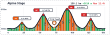
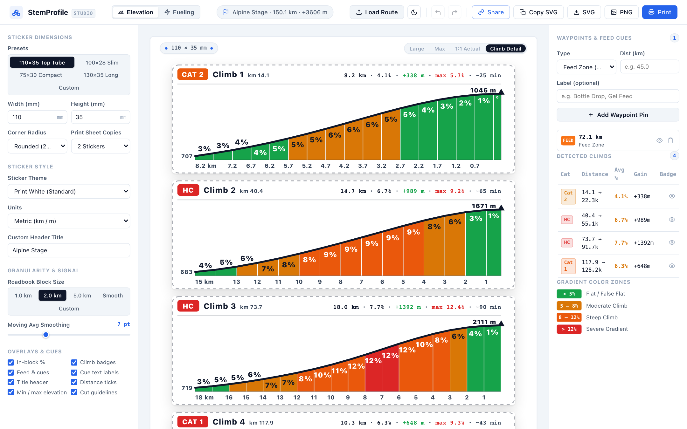
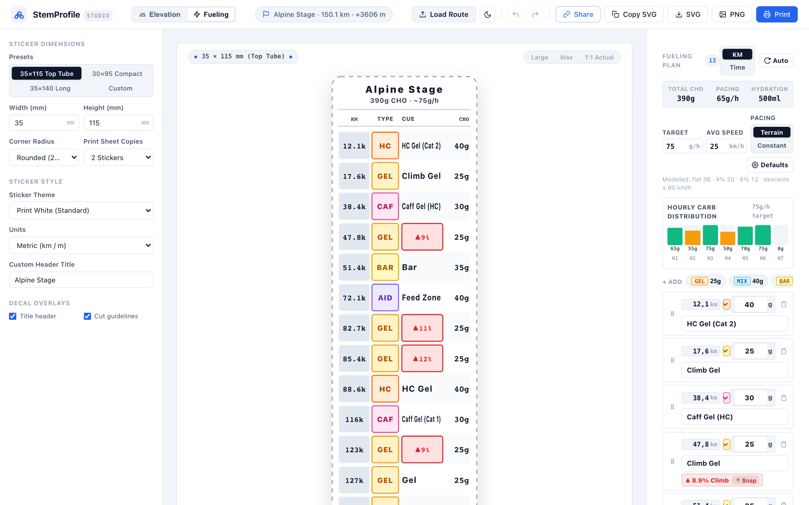
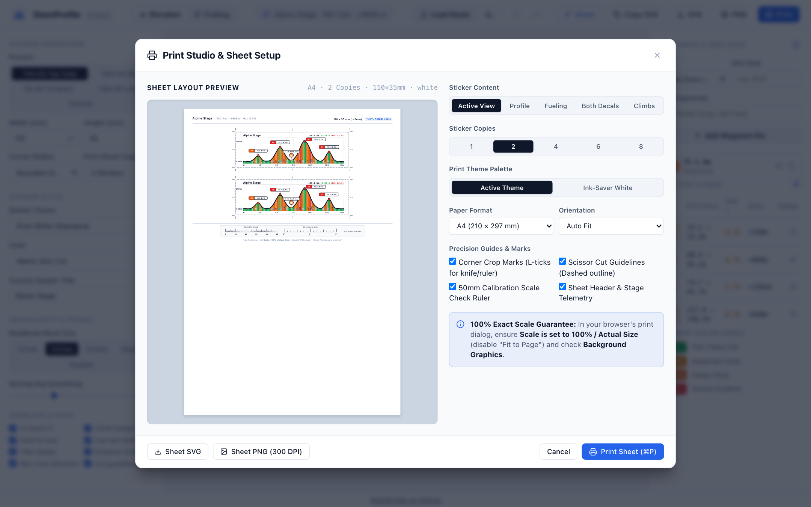

Elevation profile stickers for your bike
Your head unit shows the next few hundred meters. A sticker on your stem or top tube shows the whole day at a glance: how long the climb is, how steep it gets, and where the next bottle is.
StemProfile turns a GPX, TCX or FIT route into a printable sticker in the style of Grand Tour roadbooks. It is free, needs no sign-up, and your route never leaves your browser.
Make your sticker Try an example route

How to make an elevation sticker from a GPX file
- Export your route. GPX, TCX and FIT files all work, so exports from Strava, Komoot, Garmin and RideWithGPS are fine.
- Pick a size. Choose a preset that fits your bike, or enter your own width and height.
- Add your race plan. Click the profile to place feed zones, bottles, sprints and hazards. Waypoints in your file are picked up automatically.
- Print it. Print to scale on sticker paper with crop marks, or export a file for a print shop.
What size should a stem or top tube sticker be?
It depends on the flat area of your bike, so measure it before you print. These presets are a good starting point:
| Sticker | Size |
|---|---|
| Top tube | 110 × 35 mm |
| Long top tube | 130 × 35 mm |
| Slim stem | 100 × 28 mm |
| Compact stem | 75 × 30 mm |
| Fueling cue sheet, top tube | 35 × 115 mm |
| Fueling cue sheet, compact | 30 × 95 mm |
| Fueling cue sheet, long | 35 × 140 mm |
Long, hilly routes are easier to read on a wider sticker. If a course will not fit legibly on one, use a longer gradient block or add a separate sticker for each climb.
Reading the profile: gradient blocks
The profile is split into gradient-colored blocks of 2.5 km, 1 km, 500 m or any custom length, with the percentage printed inside each one. Steeper blocks stand out, so you can see where a climb kicks up without doing any math on the bike.
How climbs are categorized
Climbs are detected automatically and rated from Cat 4 to HC (hors catégorie), the same labels used in road racing. The score is the climb's length in kilometers multiplied by its average gradient in percent, squared. A big enough elevation gain also earns the category on its own.
| Category | Score | Or elevation gain |
|---|---|---|
| HC | 600 or more | 800 m or more |
| Cat 1 | 300 to 599 | 500 m or more |
| Cat 2 | 150 to 299 | 250 m or more |
| Cat 3 | 75 to 149 | 120 m or more |
| Cat 4 | 20 to 74 | 40 m or more, at 3% or steeper over at least 500 m |
For example, a climb of 8 km at 6% scores 288, which makes it a Cat 2.

Race day fueling stickers
The Fueling view builds a vertical cue sheet with carb and fluid targets, showing when to eat by kilometer. Timing comes from a cycling power model, so cues account for going slower uphill instead of assuming a steady speed.

How to print a bike sticker at the right size
- At home: Print Studio lays out 1 to 8 copies on A4 or US Letter with crop marks. Print at 100% and check the 50 mm scale ruler on the sheet with a real ruler.
- On a label printer: export a 300 DPI PNG.
- On a plotter or vinyl cutter: export an SVG, or send it to a print shop.
Rain and sweat wear paper down quickly. Use waterproof sticker paper or cover the print with clear tape, and clean the frame before sticking it on so the edges stay down.

Common questions
Is StemProfile free?
Yes. There is no account and no paid tier, and it is open source under the MIT license.
Is my route uploaded anywhere?
No. Everything runs in your browser, with no backend and no analytics. Share links carry the elevation profile, your cues and settings, but no GPS positions.
Do I need to install anything?
No. It runs in any modern browser.
Can I use miles and feet?
Yes. Stickers can use metric or imperial units, and there are seven themes to choose from.